Social
Toate verificările Fără Baliverne din viața socială: sănătate, educație, comunități, cu surse.
53 articole, cele mai noi întâi.
Toate verificările Fără Baliverne din viața socială: sănătate, educație, comunități, cu surse.
53 articole, cele mai noi întâi.
Kenya: greva asistentelor s-a încheiat după 43 de zile — Comisia pentru Drepturile Omului a semnalat 79 de decese, dar spune că legătura cu greva trebuie verificată clinic
🌍 Asistentele medicale din spitalele publice kenyene au intrat în grevă pentru punerea în aplicare a unui acord salarial din 2017, iar mișcarea s-a încheiat…
ChatGPT a „confirmat” un festival care nu avea loc — peste zece autocare de turiști au ajuns degeaba la Jurilovca
În weekendul 4-5 septembrie 2026, peste zece autocare cu turiști, plus numeroși alții cu mașini personale, au ajuns în comuna Jurilovca (județul Tulcea)…
Trei cetățeni israelieni, printre care un copil de 11 ani, ar fi fost dați jos dintr-un autobuz la Chișinău pe motive antisemite — IGP s-a autosesizat
Trei cetățeni ai Israelului, printre care un copil de 11 ani, susțin că au fost împiedicați să urce, pe 8 septembrie, într-un autobuz al companiei Gal Trans…
O poză reală, o persoană greșit identificată: cum a devenit consiliera lui Nicușor Dan ținta unui fake news văzut de circa un milion de oameni
Martina Orlea, consiliera prezidențială pentru combaterea dezinformării, a fost confundată pe Facebook, TikTok și LinkedIn cu procuroarea Ioana, fotografiată…
CNA a descins la Protecția Consumatorilor: doi funcționari și doi agenți economici, cercetați pentru corupere — bani pretinși ca să nu se facă controale
Pe 2 septembrie 2026, ofițeri ai Centrului Național Anticorupție și procurori ai Procuraturii Anticorupție au efectuat percheziții la Inspectoratul de Stat…
R. Moldova recunoaște, în premieră la CEDO, eșecul unei anchete de viol: femeia a așteptat 15 luni să înceapă ancheta
O femeie a depus plângere de viol, dar procuratura a refuzat de două ori pornirea urmăririi penale; judecătorul de instrucție a anulat ambele refuzuri, iar…
O femeie cu ordin de protecție și brățară electronică pe agresor a fost ucisă la Măgdăcești. Directorul Probațiunii a demisionat, protest la MAI
O femeie de 42 de ani din Măgdăcești (raionul Criuleni) a fost ucisă de soțul ei pe 31 august 2026, deși obținuse două ordine de protecție, iar agresorul…
Tiraspolul introduce ceremonia drapelului și imnului în școlile din Transnistria; Chișinăul avertizează, dar Tiraspolul deformează avertismentul
Așa-numitul minister al educației de la Tiraspol a ordonat, printr-un act din 31 iulie 2026 făcut public pe 11 august, ca fiecare săptămână de școală din…
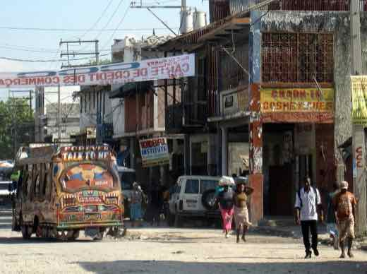
Masacrul din Kenscoff, Haiti: ONU confirmă 47 de morți, 22 executați într-o biserică, peste 50 de răpiri
În noaptea de 23 spre 24 august 2026, coaliția de bande Viv Ansanm a atacat comuna Kenscoff, lângă Port-au-Prince; potrivit unui raport prezentat la ONU, cel…
Cât din salariul unui moldovean înseamnă factura la gaz, după scumpirea de 41%. Calculul, pas cu pas
Salariul mediu prognozat pe economie pentru 2026 este de 17.400 de lei brut. Tariful la gaz urcă de la 1 septembrie la 20,30 lei/m³. Am făcut socoteala pe…
Anul școlar începe pe 1 septembrie cu o lecție despre independență, la 35 de ani de la Declarație. Ce prevede structura anului
Anul de studii 2026-2027 începe pe 1 septembrie în toate instituțiile de învățământ general din Republica Moldova, cu o lecție tematică — „Independența care…
Un sfert din gospodăriile Moldovei trăiesc din banii trimiși de acasă. Fără ei, 23,4% ar coborî sub pragul sărăciei
Datele din studiile privind migrația arată o dependență pe care scumpirile o fac vizibilă: un sfert dintre gospodăriile din Republica Moldova primesc…
O dronă necunoscută a intrat din Republica Moldova în România — fragmente găsite în Vrancea, MApN: fără încărcătură explozivă
O țintă aeriană neidentificată a intrat luni, 24 august 2026, dinspre regiunea Odesa în spațiul aerian al Republicii Moldova, apoi în România, în zona…
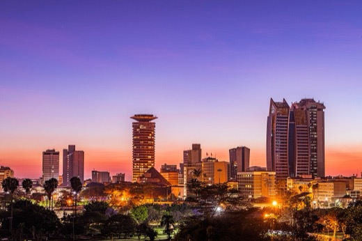
Kenya: nouă oameni reținuți de anticorupție pentru o fraudă de 1,57 miliarde de șilingi la un program pentru fermieri mici
Comisia de Etică și Anticorupție (EACC) din Kenya a reținut, pe 18 august 2026, nouă persoane — trei oficiali ai Trezoreriei Naționale și șase oameni de…
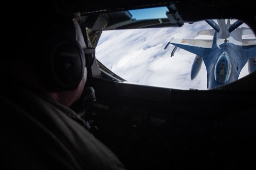
Un F-16 românesc distruge cu tunul de bord o dronă explozivă lângă Neptun Deep — Nicușor Dan acuză Rusia, fără dovadă publică a originii
Pe 20 august 2026, un F-16 românesc a distrus cu tunul de bord o dronă marină încărcată cu explozibil, aflată la câteva sute de metri de platforma de gaze…
Nouă alertă cu dronă lângă Galați: elicopter și F-18 spaniole ridicate de la sol, iar la Portul Midia a fost găsit un fragment fără explozibil
Vineri, 21 august 2026, radarele MApN au detectat o țintă aeriană lângă Reni, aproape de graniță, în timpul unui atac rusesc cu drone asupra Ucrainei; a fost…
Guvernul vrea să taie bursele sociale pe timpul vacanțelor — Salvați Copiii cere retragerea proiectului
Ministerul Educației a pus în dezbatere publică, pe 17 august 2026, un proiect de hotărâre care ar opri plata bursei sociale pe durata vacanțelor școlare — o…
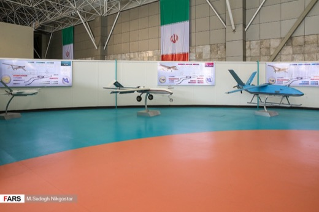
Încă o dronă a intrat în spațiul aerian românesc și a căzut lângă Grindu, Tulcea, în noaptea de 19 spre 20 august
MApN a raportat că o țintă aeriană a intrat în spațiul aerian național lângă Galați și s-a prăbușit la 4 km de Grindu, Tulcea. Nu au fost victime sau pagube…
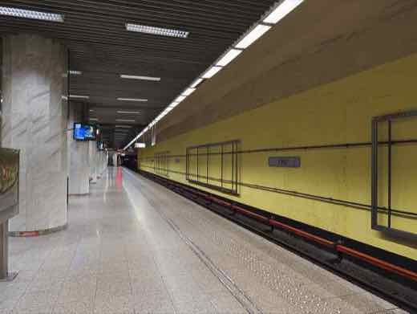
Sindicatul de la metrou amenință cu oprirea circulației în septembrie, dacă Guvernul nu plătește compensația restantă de 450 de milioane de lei
Sindicatul Liber din Metrou (USLM) a avertizat, pe 19 august 2026, că circulația metroului bucureștean riscă să se oprească în septembrie dacă Ministerul…
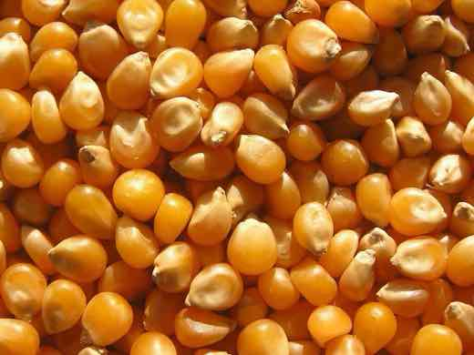
Georgescu „a prezis” criza cu „Hrană, Apă, Energie”? Sloganul circula internațional cu 15 ani înainte de campania lui
Pe Facebook și TikTok circulă mesaje care spun că Călin Georgescu „ne-a avertizat cu peste 15 ani în urmă” despre criza de hrană, apă și energie, iar criza…
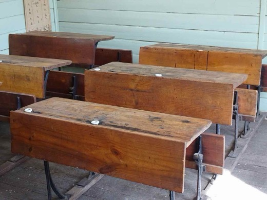
BAC 2026, sesiunea de toamnă: 33,8% dintre candidați au promovat, cea mai mare rată din ultimii ani
Ministerul Educației a publicat marți, 18 august, primele rezultate la bacalaureat pentru sesiunea de toamnă: 33,8% dintre candidații prezenți au promovat…
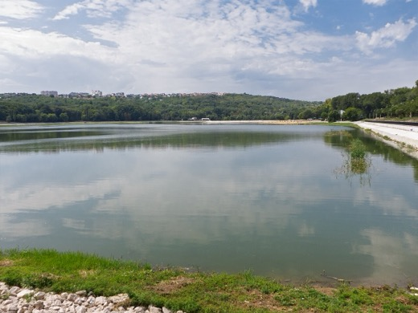
Apă cu program pentru nouă localități de pe Valea Slănicului, în Buzău — seceta a dus debitul râului la un nivel critic
Compania de Apă Buzău a introdus, din luni, 17 august 2026, un program de furnizare alternativă a apei potabile pentru localități de pe Valea Slănicului…
Un focar de ploșnițe închide o secție a Spitalului Bagdasar-Arseni din București
Secția de Recuperare Neuromusculară a Spitalului Clinic de Urgență Bagdasar-Arseni din București s-a închis temporar, de luni, 17 august 2026, după ce s-a…
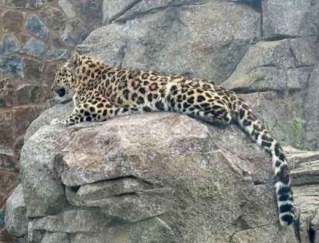
Filmul românesc „Nu e locul tău aici”, primul din istorie care câștigă Leopardul de Aur la Locarno — patru premii într-o singură ediție
Filmul „Nu e locul tău aici”, regizat de Florin Șerban și cu Adrian Văncică în rolul principal, a câștigat sâmbătă, 15 august 2026, Leopardul de Aur (Pardo…
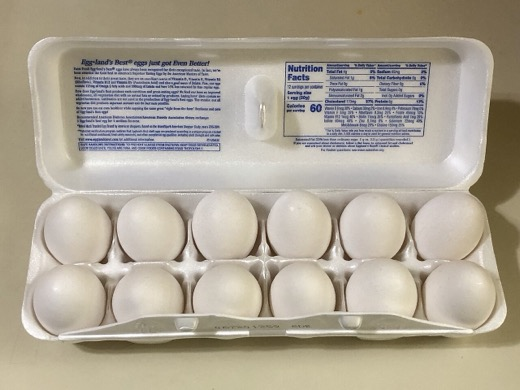
SUA: focar de salmonella legat de ouă din Texas — 98 de îmbolnăviri în 17 state, recall ridicat la risc maxim (Class I)
🌍 FDA a ridicat, pe 12 august 2026, la clasificarea Class I (risc maxim) recall-ul a circa 1,6 milioane de duzini de ouă produse de Midwest Poultry Services…
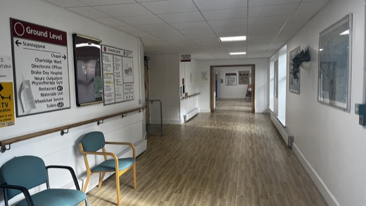
SUA au înregistrat cele mai multe cazuri de rujeolă din ultimii 35 de ani — și riscă să piardă statutul de țară fără boală endemică
🌍 Statele Unite au raportat 2.318 cazuri confirmate de rujeolă până pe 24 iulie 2026, depășind totalul din 2025 și atingând cel mai ridicat nivel din ultimii…
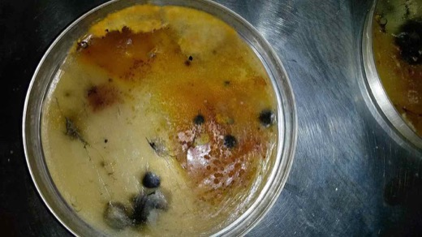
Patru elevi români au adus o medalie de aur, una de argint și două de bronz de la Olimpiada Internațională de Informatică din Uzbekistan — România urcă pe locul 2 mondial la total medalii
Lotul român a câștigat patru medalii la ediția din 2026 a Olimpiadei Internaționale de Informatică (IOI), desfășurată în Uzbekistan: aur pentru Rareș-Andrei…
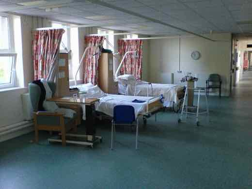
De la 1 septembrie, românii vor avea rețetele, trimiterile și istoricul medical într-un singur portal — „E-Sănătatea Mea”, lansată de CNAS
Casa Națională de Asigurări de Sănătate (CNAS) lansează pe 1 septembrie 2026 platforma națională „E-Sănătatea Mea”, un „portofel digital de sănătate” cu 12…
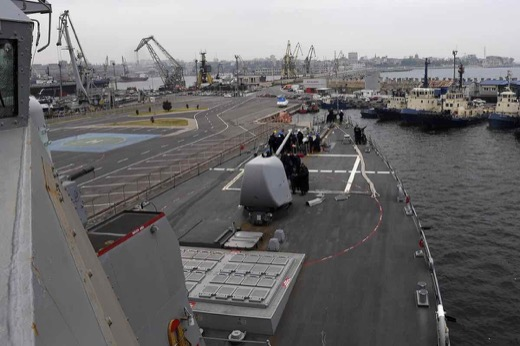
Două alerte pe litoral într-o singură dimineață: dronă fără explozibil în Portul Tomis, piesă metalică (nu mină) la Eforie Nord
Duminică, 16 august 2026, autoritățile au intervenit la două alerte separate pe litoralul românesc: un apel la 112 a semnalat resturi de dronă în Marea…
Un elev de 16 ani a murit înjunghiat la o petrecere de început de an școlar în Roskilde, Danemarca
Vineri, 14 august 2026, în jurul orei 17:33, un elev de 16 ani a fost înjunghiat lângă Louisevej, în zona Folkeparken din Roskilde, la o petrecere de…
A patra dronă doborâtă în România: un F-18 spaniol a interceptat-o lângă Galați, RO-Alert a ajuns după impact
În noaptea de 15 spre 16 august 2026, o țintă aeriană a intrat în România dinspre Republica Moldova, lângă Galați, și a fost distrusă de un F-18 spaniol…
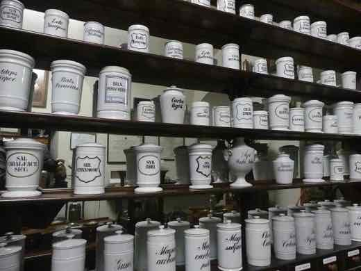
Medicamente oncologice lipsă din spitalele românești din iunie — posibil disponibile abia în septembrie
Relatări din 14 august 2026 arată că pacienții oncologici din spitalele românești nu găsesc unele medicamente de chimioterapie de la începutul lunii iunie…
Scandalul premiilor sportive neplătite: ANS confirmă restanțe de 120 de milioane de lei către sportivii campioni
După dubla de aur a lui David Popovici la Campionatele Europene de la Paris, a reizbucnit scandalul premiilor sportive neplătite din 2024. Președintele ANS…
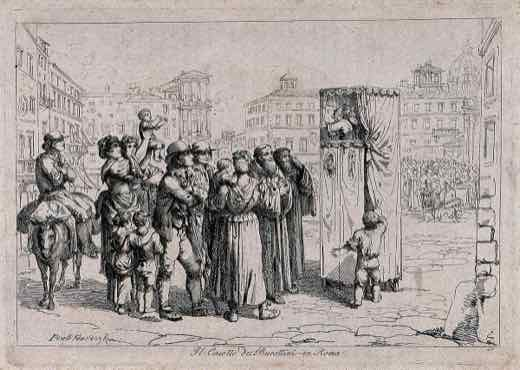
Marea Britanie confiscă peste 1,4 milioane de lire de la Cristian Boureanu, la cererea Ministerului Justiției din România
Ministerul Justiției a anunțat vineri, 14 august 2026, că autoritățile britanice — prin Crown Prosecution Service — au confiscat 1.415.794,26 lire sterline…
Accident cu trei morți, inclusiv un copil, pe DN13 în Mureș, după coliziunea a trei mașini cu un autocamion militar
Trei persoane — o femeie de 27 de ani, un bărbat de 30 de ani și un copil de 3 ani, toți din Târgu Neamț — au murit vineri, 14 august 2026, într-un accident…
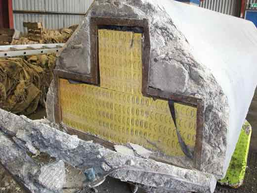
60 de percheziții în Neamț, Iași și Suceava într-un dosar DIICOT de contrabandă cu țigări
Polițiști ai Serviciului de Combatere a Criminalității Organizate Neamț și procurori DIICOT au făcut, joi, 13 august 2026, 60 de percheziții domiciliare…
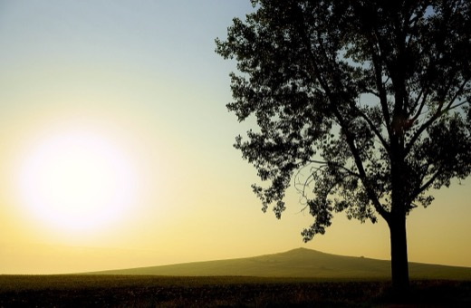
Dronă prăbușită lângă Luncavița, Tulcea: explozie și incendiu la 5 km de granița cu Ucraina — al treilea incident aerian în 24 de ore
Vineri, 14 august 2026, o dronă neidentificată s-a prăbușit lângă Luncavița, Tulcea, la 5 km de Ucraina, provocând o explozie și un incendiu de vegetație…
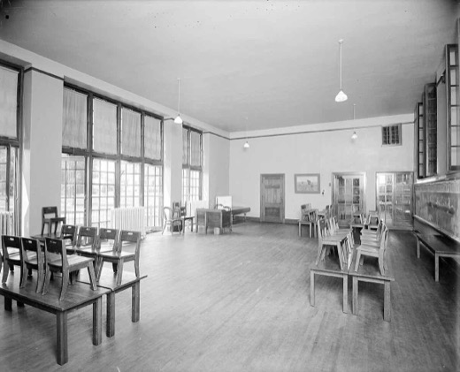
Guvernul deblochează 768 de posturi pentru personalul creșelor construite prin PNRR, pentru aproape 4.500 de locuri noi pentru copii
În ședința de vineri, 14 august 2026, Guvernul a aprobat un memorandum pentru deblocarea a 768 de posturi la 34 de creșe nou-construite (26 finanțate din…
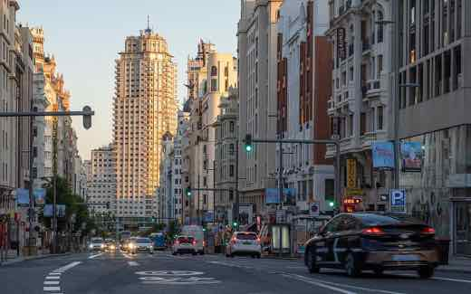
Comunitatea românilor din Spania riscă să scadă sub 500.000 pentru prima dată din 2006, arată datele oficiale spaniole
Potrivit datelor provizorii ale Institutului Național de Statistică al Spaniei (INE), 5.300 de români au părăsit Spania doar în trimestrul al doilea din…
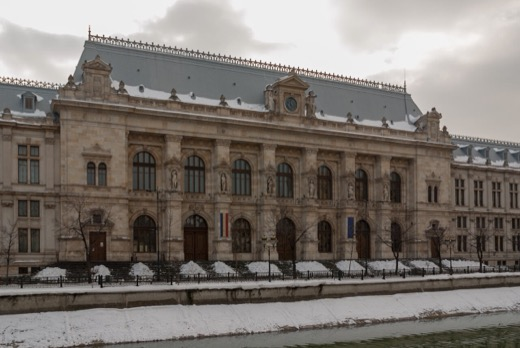
Trei directori din fabricile de armament ale statului, plasați sub control judiciar într-un dosar de corupție
Curtea de Apel București a decis definitiv, pe 13 august 2026, plasarea sub control judiciar a trei directori din uzinele de armament ale statului (București…
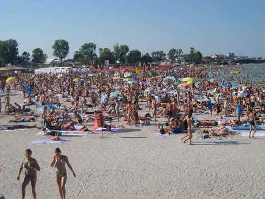
Fragment de dronă găsit în mare la Costinești, plaja evacuată — MApN: fără risc pirotehnic
Turiști au filmat joi dimineață, 13 august 2026, un obiect plutind în mare la Costinești, identificat ulterior ca fragment de dronă. Poliția, Jandarmeria…
"Project Anchor": teoria virală despre 7 secunde fără gravitație pe 12 august — ce arată dovezile
Postări virale pe Instagram și Facebook au susținut că un document NASA „scurs” numit „Project Anchor” anunța o pierdere a gravitației Pământului timp de 7…
O țintă aeriană a intrat în spațiul românesc lângă Chilia — RO-Alert în nordul Tulcei, două F-16 ridicate de la sol
În noaptea de 12 spre 13 august 2026, radarele au detectat 5 ținte aeriene lângă Ismail (Ucraina); una a intrat în spațiul aerian românesc lângă Pardina, a…
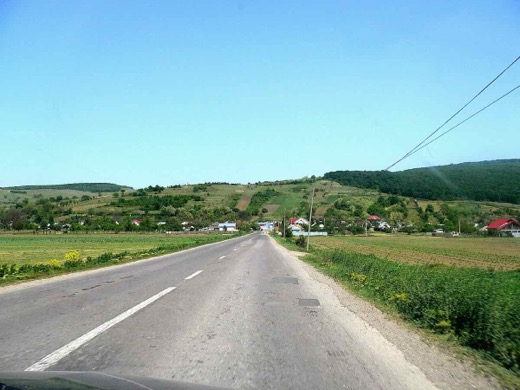
Cutremur în Vrancea, marți seara — magnitudinea inițială 4,5 revizuită de INFP la 4,3
Un cutremur s-a produs marți, 11 august 2026, ora 20:21, în zona seismică Vrancea, resimțit până la București, Brașov și Constanța. Prima estimare automată a…
Locuitori din sudul Bucureștiului au protestat la Garda de Mediu din cauza mirosurilor de la groapa Vidra
Zeci de locuitori din sudul Capitalei și din Ilfov au protestat pe 11 august 2026 la sediul Gărzii Naționale de Mediu, cerând monitorizare permanentă și…
Două drone Gerbera, distruse de scafandrii militari lângă platforma Neptun Deep — Ucraina confirmă că nu sunt ale ei
Pe 11 august 2026, o navă civilă a semnalat două drone de tip Gerbera, posibil încărcate cu explozibil, aflate în derivă lângă platforma de gaze Neptun Deep…
Ambulanță atacată cu topoare în Cluj, după un clip TikTok fals despre o „ambulanță care fură copii”
Sâmbătă, 8 august 2026, un echipaj de ambulanță a fost atacat cu bâte, pietre și topoare în comuna Recea-Cristur (Cluj), după ce localnicii au crezut, pe…
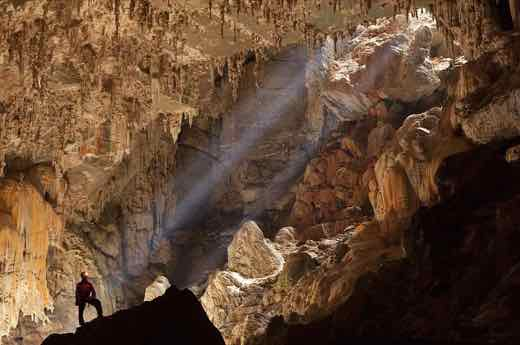
Cadastrul, blocat de aproape o lună după atacul cibernetic: ANCPI anunță repornirea e-Terra „săptămâna aceasta”, dar avertizează deja că unele documente vor întârzia
Sistemul național de cadastru și carte funciară e-Terra e nefuncțional de la atacul cibernetic de tip ransomware din 14 iulie 2026. ANCPI spune că baza de…
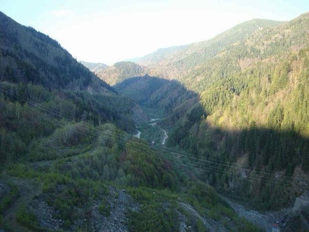
Dunărea „nu a scăzut, e propagandă proeuropeană”? Ce arată datele Apelor Române
Pe rețelele sociale au circulat imagini din zona Cazanelor Dunării însoțite de mesajul că fluviul „nu a scăzut” și că avertismentele despre secetă ar fi…
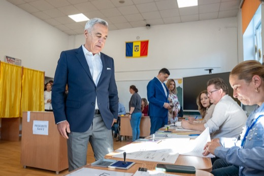
Călin Georgescu: sucurile Pepsi și Fanta „conțin nanocipuri” care „intră în tine ca într-un laptop”. Ce arată dovezile
Într-un podcast din 27 octombrie 2024, Călin Georgescu a spus că băuturi carbogazoase precum Pepsi și Fanta „conțin nanocipuri” care „intră în tine ca…
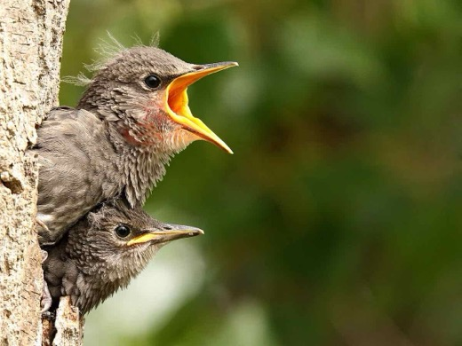
Călin Georgescu: „Apa are o memorie. H2O nu înseamnă nimic”. Ce spune chimia
Călin Georgescu a susținut public că apa „are o memorie”, că „H2O nu înseamnă nimic” și că apa „ne transmite mesaje”. Nu-i judecăm convingerile spirituale —…
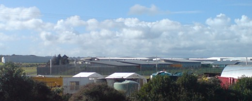
Clipul cu Șoșoacă „gardian de penitenciar” peste Bolojan și Nicușor Dan este generat cu AI
Un videoclip distribuit de filiala SOS Sibiu o arată pe Diana Șoșoacă drept gardian într-un penitenciar în care apar Ilie Bolojan, Nicușor Dan, Raed Arafat…
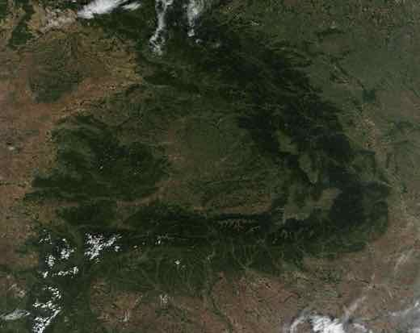
Cod roșu de caniculă extremă în șapte județe din vestul țării
ANM a emis, pentru 6-7 august 2026, cod roșu de caniculă în șapte județe din vestul și nord-vestul țării, cu maxime anunțate de până la 41°C.